What It Does
Creates model-based restrictions for actions, protected fields, ownership access, UI hiding, approvals, time rules, IP rules, and audit logs.
A practical Odoo security layer for restricting sensitive actions, hiding unavailable UI controls, routing approvals, and auditing blocked operations without custom code.
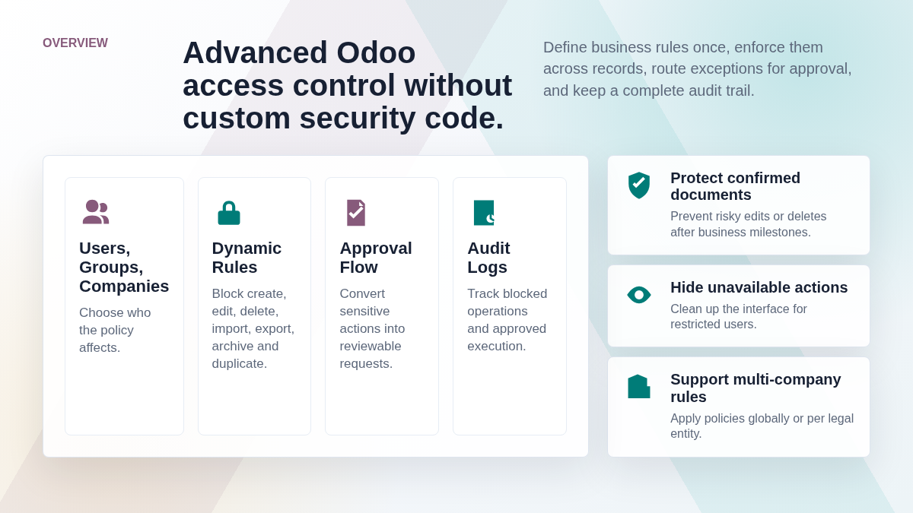
Dynamic Access Manager helps administrators enforce action-level restrictions across Odoo models. It is designed for teams that need stronger governance than standard access rights alone, while keeping configuration inside the Odoo interface.
Creates model-based restrictions for actions, protected fields, ownership access, UI hiding, approvals, time rules, IP rules, and audit logs.
Prevents accidental or unauthorized changes to sensitive sales, accounting, CRM, inventory, HR, and operational records.
Reduces custom development, improves compliance, supports delegated approvals, and gives managers a visible audit trail.
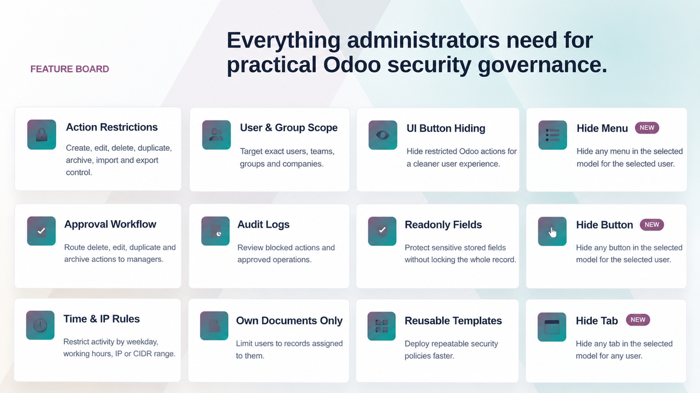
Use one consistent framework to protect business actions, guide users away from unavailable options, and review security events from dedicated menus.
Block create, edit, delete, duplicate, archive, import, export, mass edit, mass delete, and mass archive actions.
Apply restrictions by domain, selected users, groups, companies, owner fields, weekdays, working hours, and IP ranges.
Require manager review before edit, delete, duplicate, or archive operations are executed.
Capture blocked actions, approval-required events, and approved execution for operational accountability.
The following sections are based on the actual screens packaged with the module, showing how administrators configure policies and how restricted users experience them.
Dynamic Access Manager appears as its own Odoo application, giving administrators a clear entry point for managing security policies, approvals, and logs.
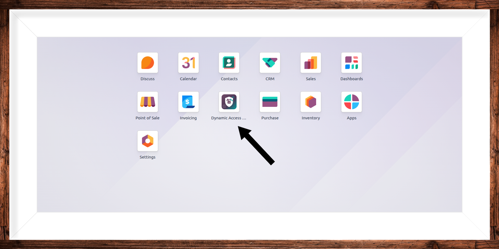
The main restriction form combines model scope, users, groups, companies, blocked actions, readonly fields, approval rules, ownership, IP rules, and UI hiding in one configuration screen.
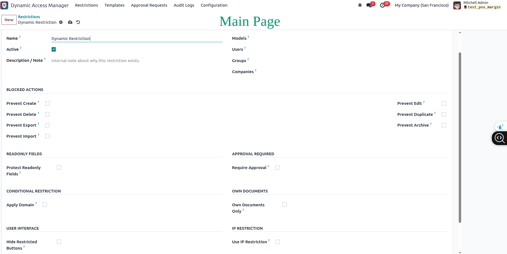
When a user tries to edit a protected Sales Order, the action is blocked with a clear Odoo warning. The restriction is enforced server-side, not only hidden in the interface.
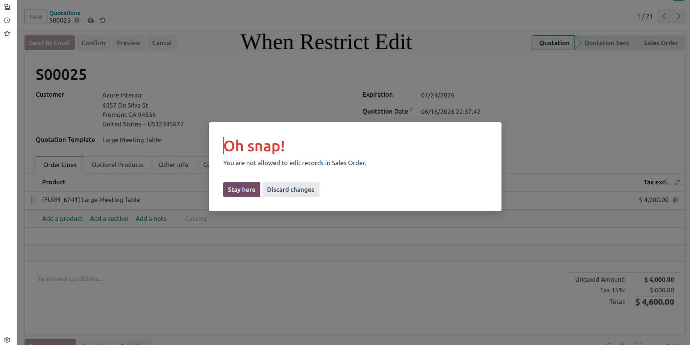
Restricted users can be guided away from unavailable actions. In the Sales quotations screen, the create action is hidden to keep the interface clean and predictable.
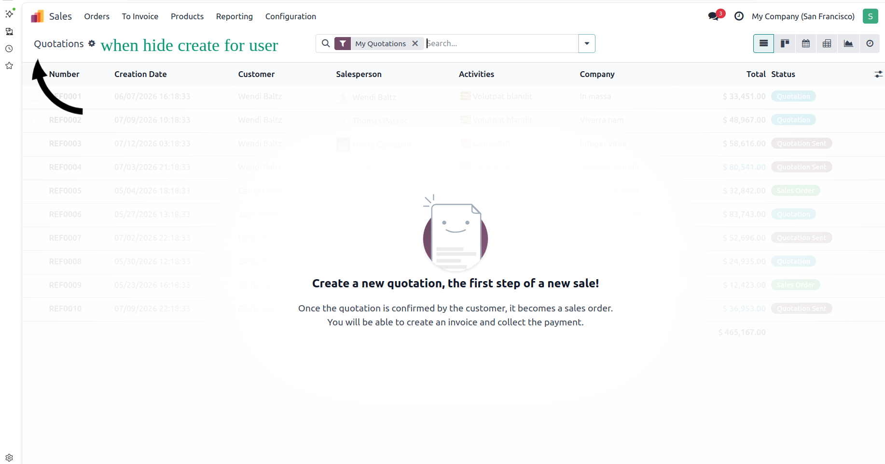
Ownership restrictions limit CRM users to records assigned to them. The screenshot shows the CRM pipeline filtered to the current user's own opportunities.
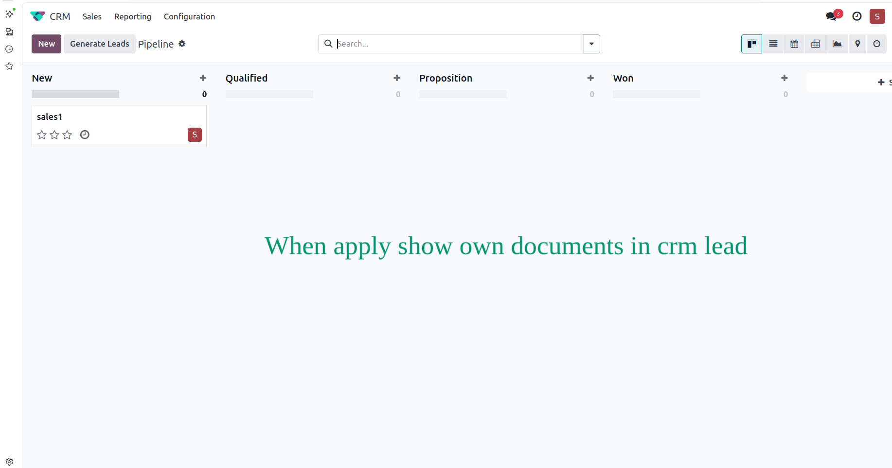
For actions that should not be permanently blocked, the module can create an approval request instead. Users receive immediate feedback that a request has been created.
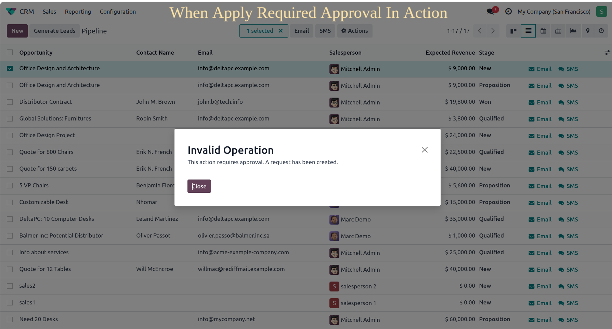
Managers can review pending and approved requests from a dedicated Approval Requests menu, with user, action, model, record, state, and reviewer information visible at a glance.
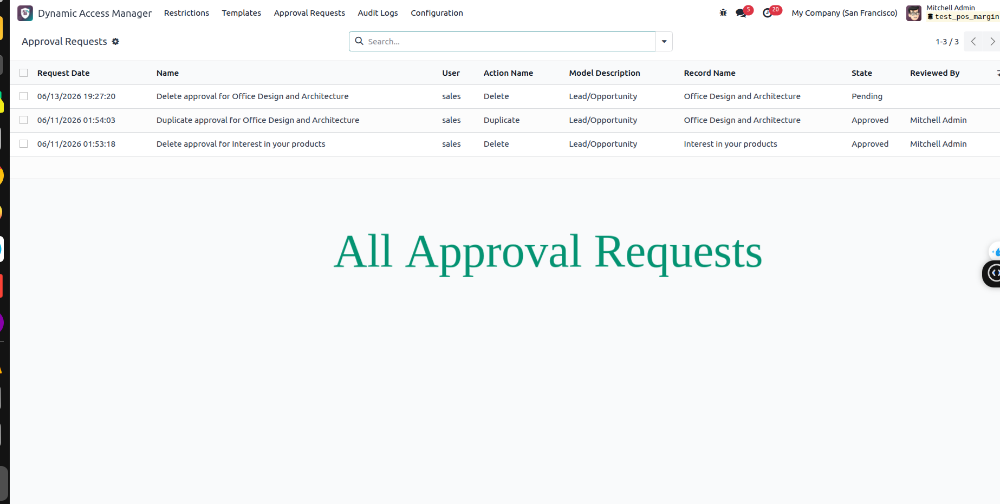
Administrators can inspect blocked operations and approval events from the Audit Logs menu, including date, user, action, model, record, restriction, and company details.
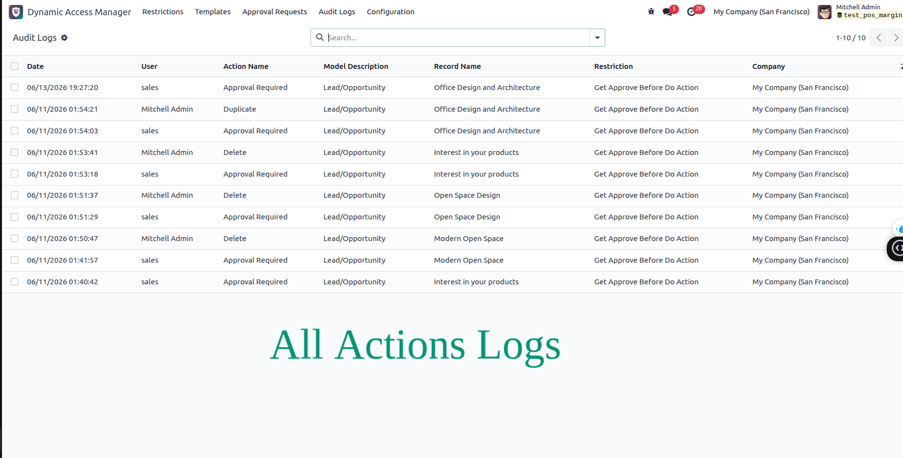
Control user access by hiding specific buttons from form and list views. Restrict actions such as Create, Edit, Delete, Duplicate, Export, and custom buttons without any custom development.
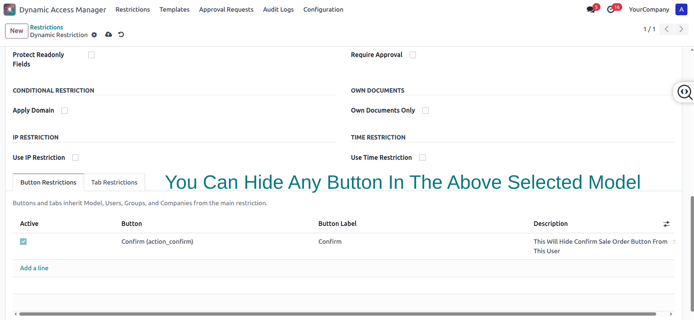
Easily hide any menu item for selected users or groups. Simplify navigation, prevent unauthorized access, and create a cleaner Odoo experience tailored to each user role.
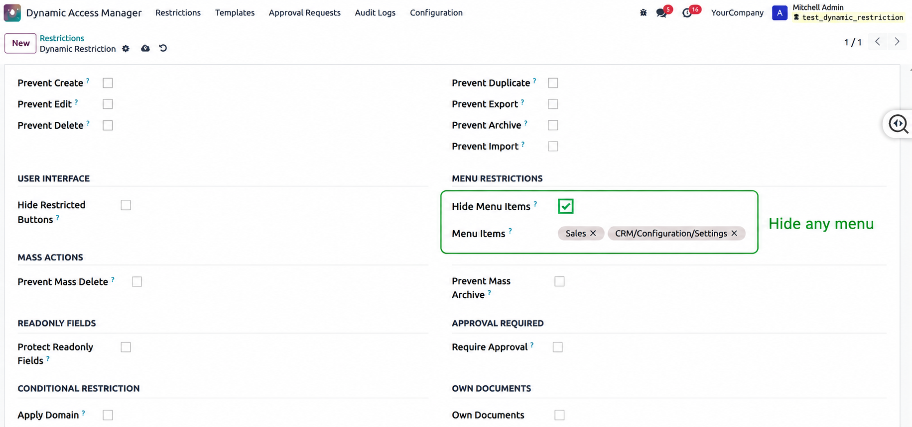
Show only the information users need by hiding specific notebook tabs within forms. Improve usability, reduce clutter, and protect sensitive data from unauthorized users.
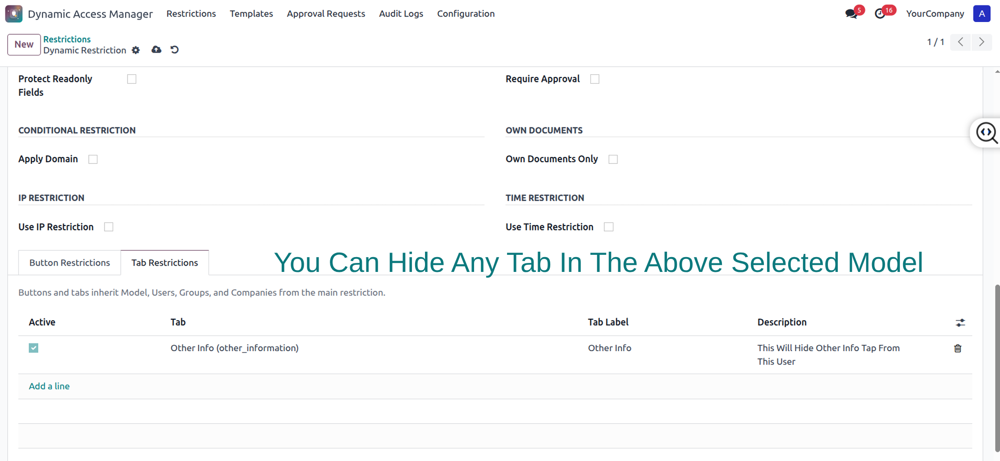
Dynamic Access Manager keeps security policy management practical, visible, and easier to maintain across changing business processes.
Configure restrictions directly from the Odoo backend.
Hide restricted actions and provide clear warnings when access is blocked.
Build practical security policies without writing model-specific Python code.
Includes approval workflows, audit logs, readonly fields, time rules, and IP rules.
Apply policies globally or only for selected companies.
Works through Odoo models, menus, access groups, backend methods, and web UI behavior.
Use this section to add a YouTube walkthrough showing restriction setup, blocked actions, approval requests, and audit logs.
Replace this area with an embedded YouTube link when the product video is ready.
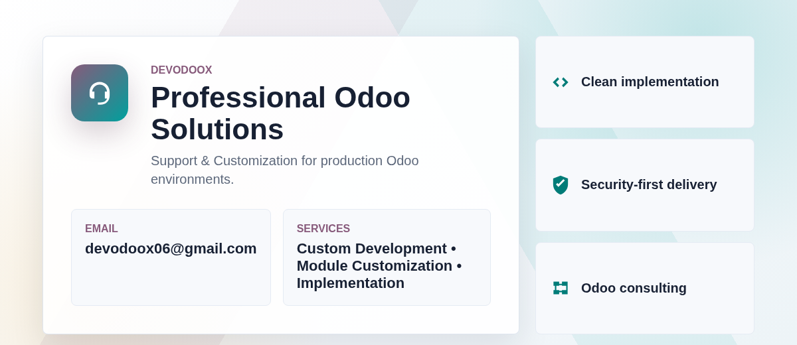
Get help with installation, configuration, custom development, module customization, migration planning, and Odoo implementation support.